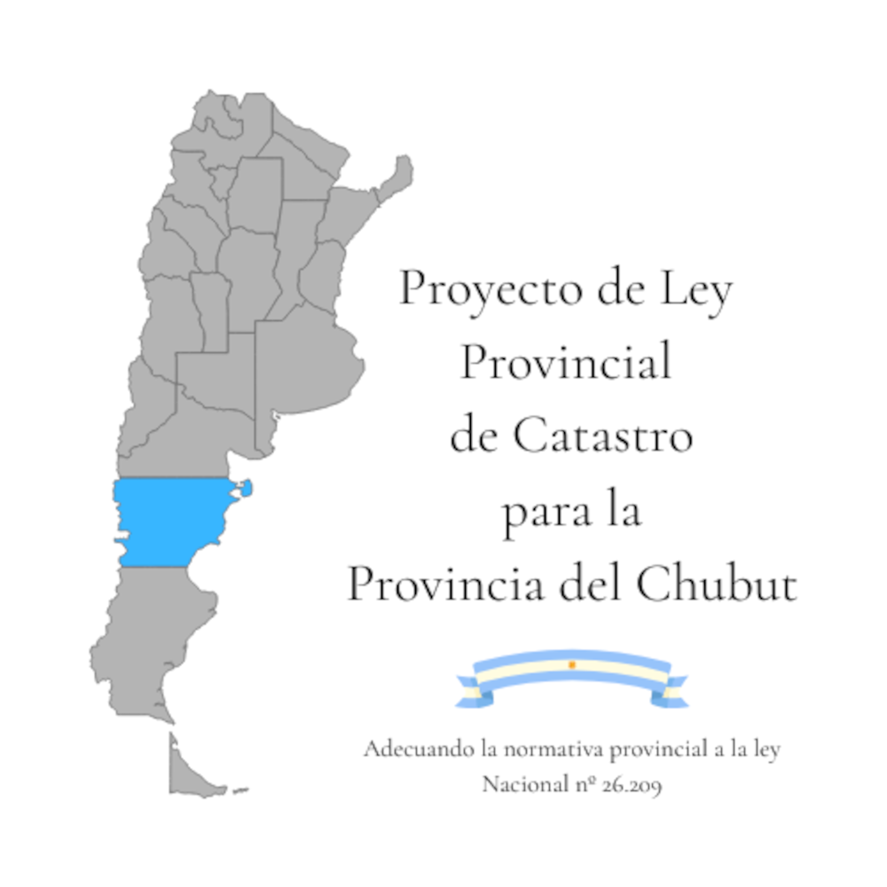

Novedades
Adecuar la normativa Provincial a la Ley Nacional de Catastro N° 26.209 y el Codigo Civil y Comercial de la Nación N°26.994.
La Normativa General Nacional se actualizo en 2.007 mediante la Ley Nacional de Catastro 26.209 y en 2015 con el Codigo Civíl y Comercial de la Nación (en adelante, CCyCN) del 2.015 que es Ley 26.994. La Ley Nacional de Catastro 26.209, al igual que la Ley de Registro de la Propiedad 17.801 del 1968 son complementarias al CCyCN. Por ello, adecuar la normativa provincial a la normativa nacional resulta menester para armonizar la norma pero tambien, para brindar a nuestra Provincia del Chubut de las herramientras necesarias para afrontar los desafios de nuestra epoca.
Actualización del 3 de septiembre de 2025.
Ya está disponible el borrador actualizado del Proyecto de Ley Provincial de Catastro del 3 de septiembre de 2025 para descargarlo y agregar comentarios si entras al drive. Link al archivo aquí
Provincias que han aplicado la Ley Nacional de Catastro Nº 26.209.
En marrón las provincias que ya aplican la Ley Nacional de Catastro 26.209 (incluyendo a CABA) o equivalente (Bs.As.) y en azul la Provincia del Chubut. Es decir, se está trabajando en la implementación de la Ley Nacional de Catastro Nº 26.209 que es norma legislativa general de fondo y que actualmente no se está aplicando en la Provincia del Chubut.
¡Ahora tenemos canal de YouTube!
Te invitamos a visitar y suscribirte al canal de YouTube del Proyecto de Ley Provincial de Catastro Chubut, donde compartiremos novedades, videos explicativos y actualizaciones sobre el proceso legislativo.
A proposito del Maestro de la Patria
para resolver hay que gestionar, para gestionar hay que conocer, para conocer hay que actualizar, para actualizar hay que sistematizar, para sistematizar hay que armonizar, para armonizar hay que conocer, para conocer hay que educar, educar al soberano.
Miremos las necesidades de los ciudadanos, las formas de producción y la gestión del territorio para ir hacia el futuro.
Adecuar la normativa provincial mediante una Nueva Ley Catastral del Chubut a la Ley Nacional de Catastro 26.209 nos brindará el marco legislativo para posteriormente trabajar en:
- Trabajar en un decreto reglamentario.
- Adecuar progresivamente la normativa administrativa.
Esto permitirá avanzar en:
- Modernización de la gestión catastral.
- Integración con municipios y el proyecto IDERA.
- Mayor celeridad y seguridad en el tráfico inmobiliario.
- Facilitar trámites y servicios para nuestros ciudadanos.
- Gestión eficiente, clara y justa del tributo inmobiliario.
- Contar con una base territorial para promover el desarrollo económico.
Para mas información o sugerencias, dejanos tus datos y nos pondremos en contacto
* Si el formulario no funciona, puedes escribir a leyprovincialdecatastrochubut@gmail.com